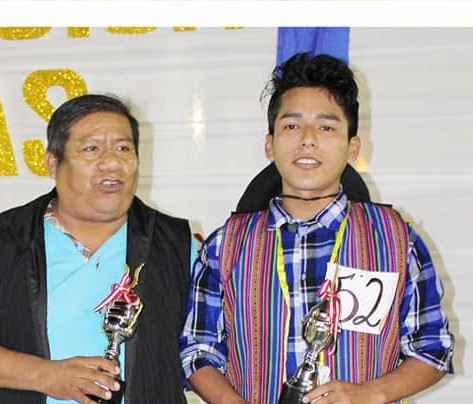
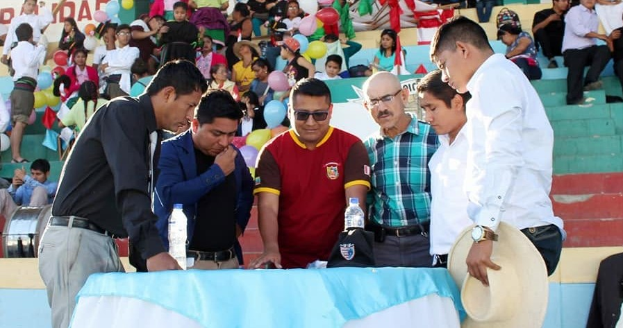
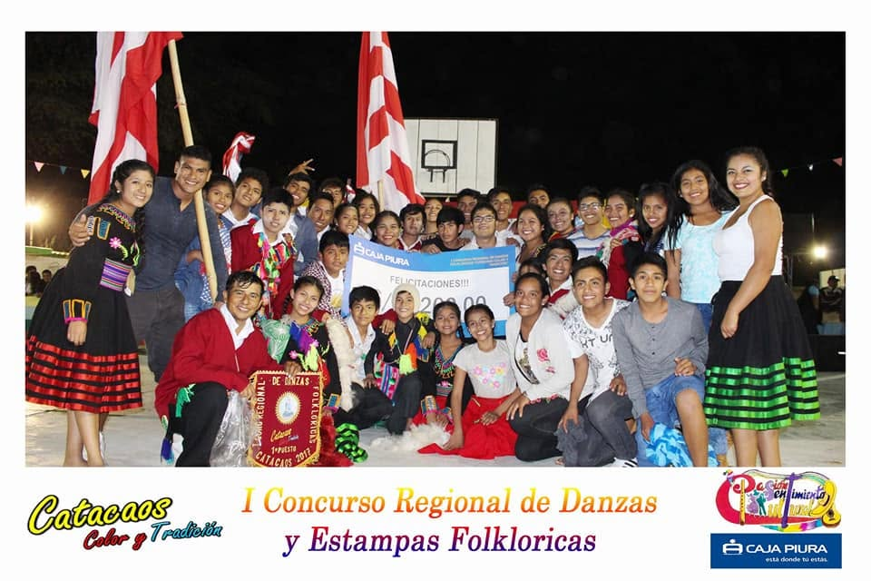
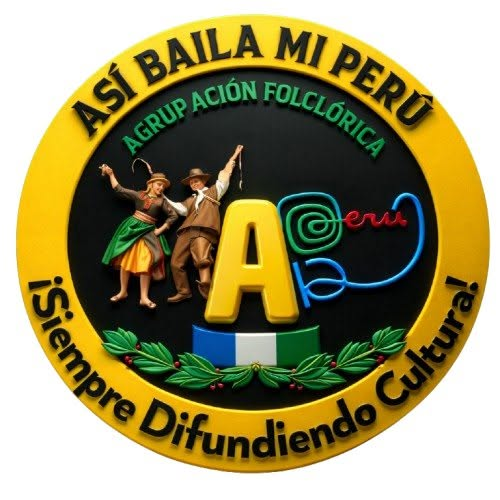
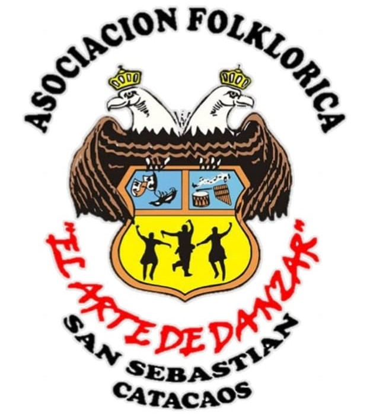
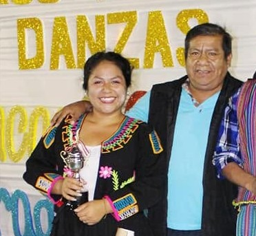
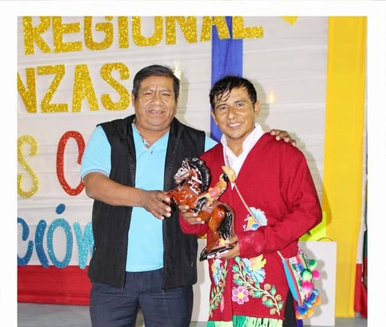
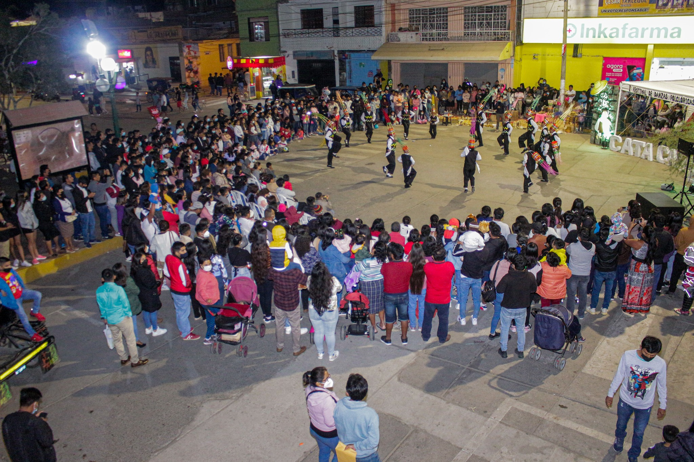
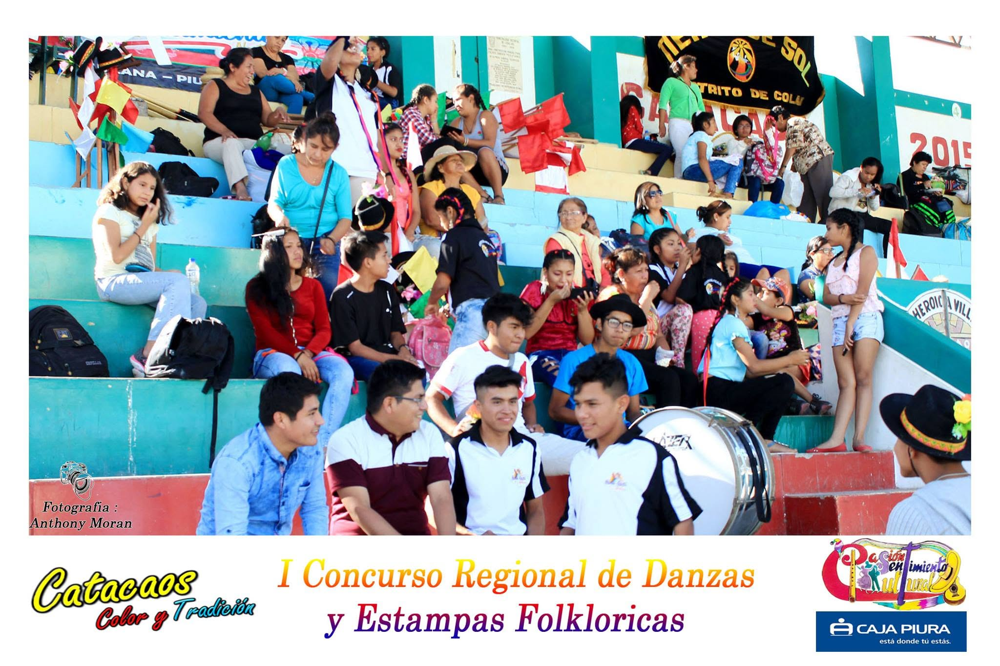

🏅 Mejor Danzante Masculino
Brayan Espinoza
A.F. Semillas y Sentimientos Norteños
La primera edición del concurso marcó el inicio de una nueva propuesta cultural en Catacaos, reuniendo agrupaciones folklóricas de la región Piura en una jornada llena de identidad, tradición y talento.
04 de noviembre de 2017
Catacaos, Piura
06 agrupaciones
Danza Regional + Nacional
Una mirada general a los hechos más importantes de esta edición.
La primera edición de Catacaos, Color y Tradición se realizó el 4 de noviembre de 2017 como parte de las celebraciones por el octavo aniversario del Grupo Folklórico Pasión y Sentimiento Cultural.
El objetivo fue crear un espacio que promoviera la danza folklórica y fortaleciera la identidad cultural en la región Piura.

Seis agrupaciones folklóricas provenientes de Catacaos, La Unión, Sechura, Sullana, Castilla y Pueblo Nuevo de Colán participaron en esta primera edición, presentando propuestas artísticas inspiradas en las tradiciones del Perú.

Cada agrupación presentó dos danzas: una regional de Piura y una nacional. Los puntajes obtenidos en ambas presentaciones fueron sumados para determinar al campeón de la primera edición del concurso.






| Agrupación | Danza | J1 | J2 | J3 | J4 | J5 | Total |
|---|---|---|---|---|---|---|---|
| Así Baila Mi Perú | Diablicos de Bernal | 31 | 34 | 38 | 31 | 30 | 164 |
| Sentimiento y Corazón | Pasacalle de Huancabamba | 39 | 35 | 42 | 38 | 38 | 192 |
| El Arte de Danzar | Pacasito | 34 | 35 | 40 | 37 | 32 | 178 |
| Semillas y Sentimientos Norteños | Pasacalle de Huancabamba | 41 | 37 | 48 | 41 | 40 | 207 |
| Raymi Danzas | Pasacalle de Huancabamba | 43 | 36 | 42 | 36 | 42 | 199 |
| Tierra de Sol | Pastorcitas de colán | 45 | 37 | 48 | 39 | 45 | 214 |
| Agrupación | Danza | J1 | J2 | J3 | J4 | J5 | Total |
|---|---|---|---|---|---|---|---|
| Así Baila Mi Perú | Qashua de Pampacancha | 33 | 34 | 37 | 35 | 32 | 171 |
| Sentimiento y Corazón | Kashua Puka Qanchis de Umachiri | 35 | 36 | 35 | 37 | 37 | 180 |
| El Arte de Danzar | Trigo Aruy | 35 | 34 | 39 | 38 | 39 | 185 |
| Semillas y Sentimientos Norteños | Fiesta Mayor de San Pedro y San Pablo | 42 | 38 | 45 | 42 | 42 | 209 |
| Raymi Danzas | Entada de San Miguel | 43 | 37 | 44 | 38 | 40 | 202 |
| Tierra de Sol | Carnaval de Macari | 46 | 36 | 45 | 40 | 44 | 211 |
| N° | Agrupación | Danza Regional | Danza Nacional | Ins. | Total |
|---|---|---|---|---|---|
| 1 | Tierra de Sol | 214 | 211 | 3 | 428 |
| 2 | Semillas y Sentimientos Norteños | 207 | 209 | 3 | 419 |
| 3 | Raymi Danzas | 199 | 202 | 3 | 404 |
| 4 | Sentimiento y Corazón | 192 | 180 | 3 | 375 |
| 5 | El Arte de Danzar | 178 | 185 | 3 | 366 |
| 6 | Así Baila Mi Perú | 164 | 171 | 3 | 338 |
Primer Lugar
Segundo Lugar
Tercer Lugar

A.F. Semillas y Sentimientos Norteños
E.C.M. Tierra de Sol


Reconocimiento al entusiasmo y apoyo del público.
Pequeños detalles que hicieron especial esta edición.
El concurso nació como parte del VIII aniversario del Grupo Folklórico Pasión y Sentimiento Cultural.
Delegaciones de distintos distritos de Piura dieron vida a la primera edición del concurso.
Cada agrupación presentó una danza regional y una nacional, sumándose ambos puntajes para definir al campeón.
Esta edición marcó el comienzo de un concurso que continúa promoviendo la identidad y el folclore peruano.
La edición 2017 fue la única hasta la fecha en contar con un panel conformado por cinco jurados calificadores.
El Mejor Danzante fue elegido por un Jurado VIP, utilizando números colocados en la vestimenta de los participantes.


Presentaciones, resumen oficial y momentos destacados.